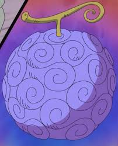
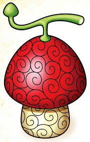
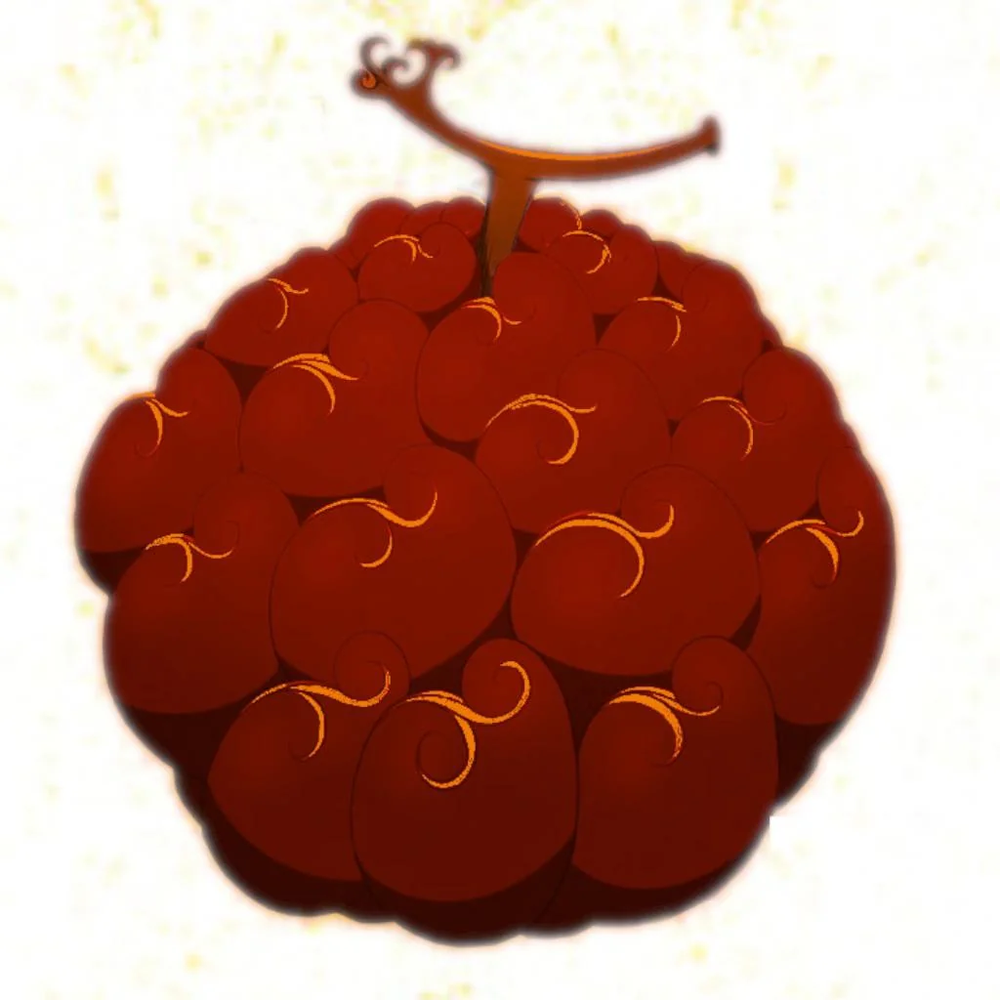
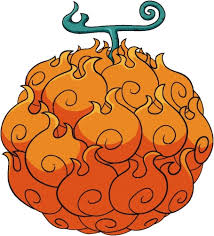
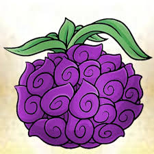
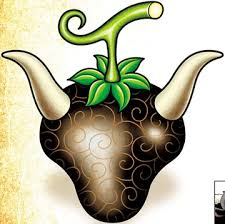
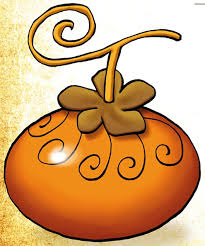
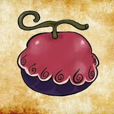

Gomu Gomu no Mi
Corpo do usuário se torna borracha, permitindo ataques elásticos.
Tipo: Paramecia
Hito Hito no Mi
Permite ao usuário se transformar em humano ou híbrido.
Tipo: Zoan
Magu Magu no Mi
Controle absoluto do magma e transformação em lava.
Tipo: Logia
Mera Mera no Mi
Permite criar, controlar e se transformar em fogo.
Tipo: Logia
Yami Yami no Mi
Controla a escuridão e pode anular poderes de outras frutas.
Tipo: Logia
Ushi Ushi no Mi
Transforma o usuário em um híbrido de boi.
Tipo: Zoan
Inu Inu no Mi
Permite transformação em diferentes espécies de cachorro.
Tipo: Zoan
Soru Soru no Mi
Manipula almas e pode dar vida a objetos inanimados.
Tipo: Paramecia